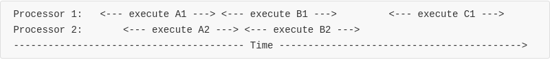
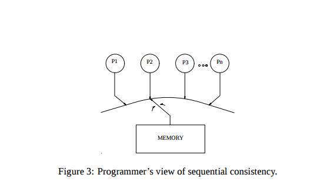

A Few Words About Concurrency (part II)
A Few Words About Concurrency (part II)
In the first one of this series I wrote about locking. In this essay, I would like to talk about memory model.
I have been reading about concurrency these days and wish to be able to write concurrency programs as fluently as sequential ones. But it is very difficult. There are many intimidating concepts in the literature I read, which feel non-understandable and usually cannot be applied directly to real world programming (most of them are mathematical concepts). Among all the things involved, I found that memory model is a big topic, and once you know something of it, you open the door of concurrent programming.
#1, Introduction
By definition, a memory model describes the interactions of threads through memory and their shared use of data. In a world, it is a contract between programmers and systems, which specifies whether some sort of memory operations are allowed or not. For example:
xint X, Y;int r1, r2;//thread 1 //thread 2void T1(){ void T2(){ X = 1; Y = 1; r1 = Y; r2 = X;} }it is natural to expect either r1 == 1, r2 == 1 or perhaps both, but never r1 == 0 && r2 == 0, because no matter which processor writes 1 to memory first, it's natural to expect the other processor to read that value back. However, this is not the case. We CAN end up with a r1 == 0 && r2 == 0, at least on x86, because in many multiprocessor/multicores systems, CPUs are allowed to re-order instruction for optimization. For example, on x86, the specification states that Loads may be reordered with older stores to different locations, which means that the above program can be effectively re-ordered to something like this:
xxxxxxxxxxint X, Y;int r1, r2;//thread 1 //thread 2void T1(){ void T2(){ r1 = Y; r2 = X; X = 1; Y = 1;} }and the final result would be r1 == 0 && r2 == 0. You can download a testing program from here to test it yourself.
Contrary to the above example, the following example will work as expected on x86 (the assertion will never fail) because x86's manual specifies that stores are not reordered with other stores:
xxxxxxxxxxint a=0;int b=0;//thread 1 //thread 2void T1() void T2(){ { a = 1; while(0 == b) b = 1; ; assert(1 == a);} } You see, sometimes CPUs might re-order our program for optimization reason. Besides from re-ordering, CPUs might also perform pipelining, read speculation and memory prefetching to speed up our programs. Therefore, the order where your programs are executed might not be the same with the order you wrote them. In order to enable programmers to reason about their programs and be sure what they would behave as expected, there must be a contract between CPUs and programmers that specifying what CPUs would do on a multiprocessors/multicores platform. That contract is called memory model, formally.
#2, Memory Model at the Hardware Level
Actually, there are both memory models on the hardware level and programming languages level. Let's start with the hardware level first and take x86 as an example. Note that, for the topic memory model, I would mainly talk about memory re-ordering and memory barrier, which you may find different from some text book in you university courses
Implication for the Single-thread World
That kind of re-ordering might scare you and make you worry about whether you have written a correct program  So before we start, let's be clear with the following:
So before we start, let's be clear with the following:
There is a context for all the words I have: This is all for multi-threads programs.
The cardinal rule of memory reordering, which is universally followed by compiler developers and CPU vendors, could be phrased as follows[2]:
It should not modify the behavior of a single-threaded program.
Note that this is also true for the programming languages/compilers level.
Therefore, you NEVER have to worry about these things while writing single-threaded program.
X86's Memory Model
There is a informal memory model for x86[1]:
- Loads are not reordered with other loads.
- Stores are not reordered with other stores.
- Stores are not reordered with older loads.
- In a multiprocessor system, memory ordering obeys causality (memory ordering respects transitive visibility).
- In a multiprocessor system, stores to the same location have a total order.
- In a multiprocessor system, locked instructions have a total order.
- Loads and stores are not reordered with locked instructions.
- Loads may be reordered with older stores to different locations
x86's memory model is a strong memory model, but it is not sequential consistent, which simply means that there are still lots of instruction re-ordering in the x86 world, as illustrated in the first example above. You can find in section 8.2 of Intel's x86 reference a more detailed description.
Memory Barrier to Rescue
What can we do in cases of memory re-ordering? How to make our programs executed as we wrote it? Turns out that every architecture provides explicit memory barrier instructions to force CPUs to execute instructions in the order as we wrote it.
For example, to make our first example work correctly, we can insert two lines of memory barrier instructions:
xxxxxxxxxxint X, Y;int r1, r2;//thread 1 //thread 2void T1(){ void T2(){ X = 1; Y = 1; memory_barrier(); memory_barrier(); r1 = Y; r2 = X;} }What memory barrier means is that every instruction before the memory barrier have to finish and be seen by other processors[3] before instructions after the memory barrier can be executed.
For example, x86 provide three memory barrier (memory fence) instructions[4]: SFENCE, LFENCE and MFENCE, which stand for write memory barrier(store fence), read memory barrier(read fence) and full memory barrier(memory fence) respectively. Their differences are listed below:
Write Memory Barrier
Any write before the write memory barrier is flush out to the main memory before execution of instructions after the write memory barrier.
Read Memory Barrier
When we go past the read memory barrier, it is as if the local memory has been invalidated, and we must fetch from main memory any variables that will be referenced after the read memory barrier.
Full Memory Barrier
A full memory barrier does both the job of a write memory barrier and read memory barrier.
Simply put, read memory barrier acts only on instructions that read from memory while write memory barrier acts only on instructions that write to memory.
With memory barrier, we can explicitly force CPUs to execute our program in the order as we wrote it and don't have to worry about the reordering issue anymore.
Locks Already Have Memory Barrier Built-in
I just want to tell you that every kind of lock I have ever since already have memory barrier built-in. That says, in many cases, you don't have to use memory barrier. A simple lock is sufficient. And that is also why many people can write multi-threads code without caring/knowing memory re-ordering issues -- their use of locks already performs memory barrier for them.
#3, Memory Model at Programming Languages/Compilers Level
When compiling, some compilers might also re-order/optimize our programs such that they look correct in single-thread program but fail in multi-thread program. For example, this C program:
xxxxxxxxxxint a = 0;int b = 0;void test(){ while(0 == b) ; assert(1 == a); return 0;}when compiled with -O3 optimization flag with GCC, will get into a infinite loop, because GCC might turn that into something like:
xxxxxxxxxxvoid test(){ int _tmp = b; while(_tmp != 0) ; assert(1 == a); // <- get into infinite loop return 0;}In a single thread program this is fine since both are functionally the same: nothing would change the value of b after all. But in a multi-thread program where b is in memory shared by multiple threads, which means that the value of b can be changed by other threads, this kind of optimization is wrong.
Therefore, we need a memory model to help define which kind of memory access can be optimized by the compiler and which are not, so that programmers can be able to reason about their programs.
The Java Memory Model
I am not going to talk about the whole Java memory model. That requires a lot of effort. I am going to show you some examples that illustrate the semantic of Java's volatile and synchronized keywords and hopefully that will help you gain insights into the current Java memory model.
Let's take Java's double-check lock idiom for example. In Java, a naive (wrong) implementation of the Singleton Pattern would be:
xxxxxxxxxxclass Singleton { private static Singleton INSTANCE; public static Singleton getInstance() { if(null == INSTANCE) INSTANCE = new Singleton(); return INSTANCE; }}It is easy to spot that this kind of wrong implementation because of its lack of synchronization. Any Java programmer can "correct" those code into something like this, with the synchronized keyword:
xxxxxxxxxxclass Singleton { private static Singleton INSTANCE; public static synchronized Singleton getInstance() { if(null == INSTANCE) INSTANCE = new Singleton(); return INSTANCE; }}That is correct. But maybe we can make it even better, to avoid synchronization on every call of getInstance().
xxxxxxxxxxclass Singleton { private static volatile Singleton INSTANCE; public static Singleton getInstance(){ if(null == INSTANCE){ synchronized(this){ if(null == INSTANCE){ INSTANCE = new Singleton(); } } return INSTANCE; } }}This is called the double-check lock pattern. It seems perfect and would gain use some performance boost. However, there is still a problem with it: it doesn't work.[5]
 What synchronized Means[6]
What synchronized Means[6]
mutual exclusion
Java's synchronized keyword is similar to a mutex/semaphore between multiple threads. It guarantees that multiple threads which do sychronized() on the same object cannot enter the block protected by that synchronized simultaneously.
memory barrier
synchronized does not only means mutual exclusion, it also has the effect of memory barrier: when a thread exit a synchronized block, it performs a write barrier (flush out any variable modified in that block before exiting). when entering a synchronized block, it perform a read barrier (it is as if the local memory has been invalidated, and it must fetch any variables that will be referenced in the block from main memory) [6]
Basically it is similar to a lock...
Caveat
But, very important but, the synchronized keyword does not guarantee the order of execution inside a synchronized block. That means:
xxxxxxxxxxclass Singleton { ... public static Singleton getInstance(){ if(null == INSTNACE){ synchronized(this){ ... //code here may be re-ordered due to optimization } return INSTANCE; } } ...} Another Thread See Partially Constructed Object
Another Thread See Partially Constructed Object
The reason why the previous double-check code doesn't work is that the initialization of the INSTANCE variable (i.e. INSTANCE = new Singleton();) is not atomic and the initialization order might be re-ordered. For example, it might be the case that:
- memory for the new Singleton object is allocated
- constructor of the Singleton object is called
- a reference to that newly created Singleton is assigned to INSTANCE
However, it can also be the case that:
- memory for the new Singleton object is allocated
- a reference to that newly created Singleton is assigned to INSTANCE
- constructor of the Singleton object is called
If case 2 is the case, then another thread might see a reference to a partially constructed object:
- at the very first INSTANCE is null
- thread A enter the synchronized block
- memory for the new Singleton object is allocated
- a reference to that newly created Singleton is assigned to INSTANCE
- thread B calls
getInstance()and seeINSTANCE != null. So it would not try to enter the synchronized block. At this moment, thread B see a partially constructed object.
This is bad and leads to broken code. See this code example if you want to see it broken in effect.
 volatile to Rescue
volatile to Rescue
To make the above program correct, we can use the volatile keyword:
xxxxxxxxxxclass Singleton { // use `volatile' private static volatile Singleton INSTANCE; public static Singleton getInstance(){ if(null == INSTANCE){ synchronized(this){ if(null == INSTANCE){ INSTANCE = new Singleton(); } } return INSTANCE; } }}JDK5 and later extends the semantics for volatile so that the system will not allow a write of a volatile to be reordered with respect to any previous read or write, and a read of a volatile cannot be reordered with respect to any following read or write. Therefore, there is no such re-ordering as in case 2 and the newly created Singleton object will be fully constructed before its reference is assigned to INSTANCE.
Note that the semantic of Java's volatile is different from C/C++ 's. Java's volatile keyword has a happen-before effect, while C/C++'s is more simpler and usually does not offer what you want.[7]
 Other Techniques
Other Techniques
Of course there are other techniques for implementing a singleton in Java. I would list some of those here, but not detail them, as the topic of this essay is memory model, not design pattern. You can find more info in the references.
Early-loaded Singleton
Use Java's static keyword.
xxxxxxxxxxpublic class Foo {// INSTANCE will be initialized by JVM on startup. Thread safeprivate static final Foo INSTANCE = new Foo();private Foo() {if (INSTANCE != null) {// SHOUTthrow new IllegalStateException("Already instantiated");}}public static Foo getInstance() {return INSTANCE;}}Enum
xxxxxxxxxxpublic enum Foo {INSTANCE;... // your methods go here}This kind of implementation is guaranteed to be thread-safe and serializable, and it is recommended in the book Effective Java. See here for more info.
From the above discussion we can know what it means to be a memory model for a programming language[8]: a specification which specify at the programming language level the interactions of threads through memory and their shared use of the data. You can see the how the semantic of those language keywords such as volatile and synchronized are defined by the Java language specification, and how that specification is used to reason about concurrent/multithreads programs.
For further material of Java's memory model (e.g complete memory model specification), see [9].
The C/C++ Memory Model
Before C11/C++11, the C/C++ languages have no memory model, meaning that all those memory model related issues is platform-dependently and in many case directly related to hardware. After C11/C++11, there are official memory model in the language specifications.
You may start from this point.
(more to be added here...)
#4, Memory Consistency Model
Let's now turn to some more general topic: memory consistency model. When talking about memory consistency model, our domain is not only multiprocessors systems or systems with many cores, but also other related topics such as distributed system with thousands of machines running at the same time.(I will, however, prefer to use multiprocessors systems as examples  )
)
Imagine lots of processors are running our programs at the same time. How can we reason our programs and make them correct? What kind of system can guarantee that this line of code will be always run before the other and that will never be re-ordered?
Through decades of development, a concept called memory consistency has been proposed, which specifies the the ordering of operations to multiple locations with regards to all processors (or, every part of the system). Again, it is a contract which guarantees that if programmers follow specific rules, memory will be consistent and the result of memory operations will be predictable.
For example, imagine the following execution flow:

You can see that there are a large portion of overlap between processor 1's A1 and B1, and processor 2's A2 and B2. But before C1 executes, all A1, B1, A2 and B2 have already finished. So,
- Can C1 see all the result of A1, B1, A2 and B2 ?
From the respect of time, B2 execute after A1 have finished. So,
- Can B2 see all the result of A1 ?
From the respect of time, B2 execute after A2 have finished. So,
- Can B2 see all the result of A2 ?
The answers to all the questions above is: it depends. If the system is quiescent consistent, then 1 and 2 are true, but 3 is not necessary true. If the system is sequential consistent, then 3 is true, but 1 and 2 are not necessary true.
Sequential Consistency
By sequential consistency, it means that the result of any execution is the same as if the operations of all the processors were executed in some sequential order, and the operations of each individual processor appear in the order specified by its program.
It can be easily demonstrated by the figure below:

Conceptually, there is a single global memory and a switch that connects an arbitrary processor to memory at any time step. Each processor issues memory operations in program order and the switch provides the global serialization among all memory operations.
Back to the previous consistency model execution flow example above, being sequential consistent means that the order of program on every processor is preserved, but the order between processors are undefined. Therefore, this kind of execution flow is allowed:
A1, B1, A2, C1, B2
because the program order on every processor is preserved. However, this kind of execution flow is not allowed:
B1, A1, C1, A2, B2
because the program order on processor 1 is not preserved (B1 is expected to execute after A1, no matter what).
Note
Sequential consistency seems to be a very good properties. However, it is too strict, and, AFAIK, none of the existing processors nowadays is sequential consistent. X86, for example, is not sequential consistent. Instead, it has a weaker consistency model similar to sequential consistency model: see the TSO paper for more info.
Quiescent Consistency
By quiescent consistent, it means that only the mutual order separated by a quiescent point is preserved. Take the consistency model execution flow above as an example: C1 is separated by a quiescent point from A1 & B1 & A2 & B2. As a result, the order between C1 and A1 & B1 & A2 & B2 is preserved, but the order inside A1 & B1 & A2 & B2 is undefined.
Why We Need It
The reason why we need this seemingly useless concepts is that we need to have a solid foundation to describe the behavior of a multiprocessor/multicore/distributed system and the interaction between every part of it, just as we need a formal memory model (think TSO for x86) to formally describe the behavior of CPUs such that we can reason our programs, especially those large scale ones. Let's see whether we can make it clear in the future posts.
#5 Conclusion
That finishes our discussion of memory model. We talked about the reason why we need memory models, at both hardware level and programming languages level, with each of them detailedly discussed. We also make a few discussion on a related topic memory consistency model (a rather simper one actually[10]), hoping to bring all these things together. In the future, let's see whether we can bring more about how a memory model is used and unified in an operating system (e.g Linux now has a pretty complete memory model), and, of course, finish the C/++ part 
 Notes
Notes
- I quote it from here. You can also find it in Intel's x86 manual.
- The quote was a tradition English saying from here.
- Some argue that memory barrier do nothing with data propogation from one part of the system to other part. That is quite true, because the Alpha processor is an exception for this rule. But for other processor, data propogation can be forced by memory barriers.
- You can see full semantics of these instruction in these page: lfence, sfence, mfence.
- I heard it from someone, but I forget where the source is.
- Many thanks to this javaworld article.
- See this doc in the Linux Kernel Document.
- Some will argue that nearly all of those optimization stuff exist in the JVM, which is not compiler and more or less like a machine. I would suggest we all treat them at the programming languages level...
- You can find full description of Java's Memory Model in the Java Languages Specification. To have a easier starting point, you can start from this FAQ page and find references here. If, after scanning those pages, you are still interested in concurrent programming in Java, you may want to see this docs/tutorial which contain lots of material on this topic.
- We left out many material on this topic, such as Linearizability. You can find a very instructional material here.
Yubin Ruan, last modified in 2017-05-08
Comments powered by disqus